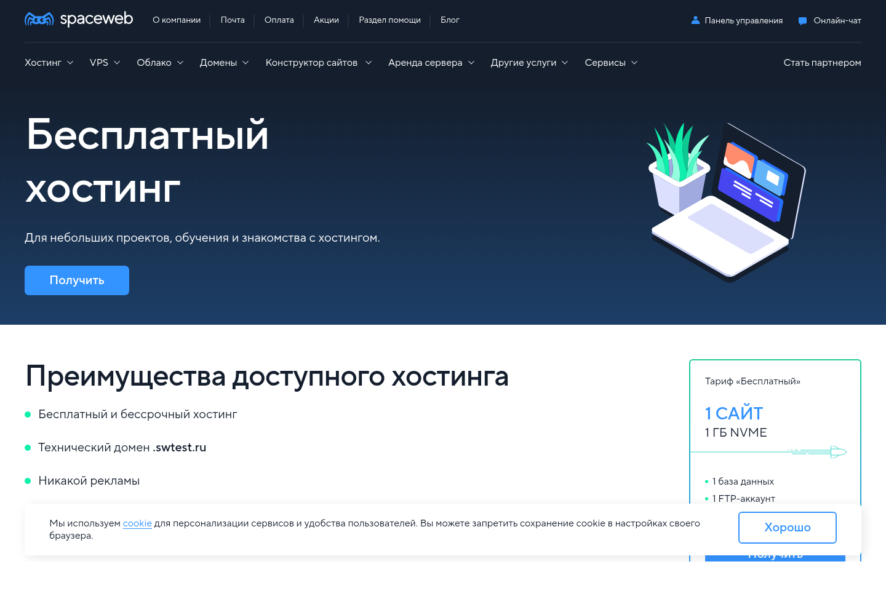

Пошаговая инструкция · без командной строки
SpaceWeb Free + собственный домен + SSLКак разместить портфолио на SpaceWeb Free
Бесплатный хостинг, собственный зарегистрированный домен, Let’s Encrypt, загрузка одного ZIP и установка из браузера.
Важное ограничениеТехнический адрес login.temp.swtest.ru работает для просмотра по HTTP, но панель не предлагает его для выпуска Let’s Encrypt. Для безопасной админки нужен собственный домен.
Сам хостинг бесплатен: PHP 8.x, MySQL и 1 ГБ входят в тариф. Регистрация или продление собственного домена оплачивается отдельно.
Проверено по официальной справке и панели
Возможности и ограничения

Входит
- 1 сайт и 1 ГБ;
- 1 база данных;
- PHP 8.x и MySQL 5.7;
- технический адрес *.swtest.ru;
- Let’s Encrypt для подходящего домена.
Не входит
- собственный домен;
- HTTPS для *.temp.swtest.ru;
- почта и sendmail;
- гарантированная поддержка.
Для этой админки HTTPS обязателен. Не вводите ключ установки, пароль базы или ключ админки на техническом адресе по HTTP.
Лимиты строгие: 15 процессорных минут и для MySQL 200 секунд в сутки либо 15 секунд за 15 минут.
Весь путь
Что предстоит сделать
1Получить Free-аккаунт
Подтвердить телефон и заполнить профиль.
2Подключить собственный домен
Зарегистрированный домен направить на SpaceWeb.
3Включить Let’s Encrypt
До ввода любых секретных ключей.
4Создать пустую MySQL 5.7
Сохранить имя и пароль.
5Загрузить универсальный ZIP
В корень аккаунта, где видна public_html.
6Открыть install.php
Установщик импортирует данные сам.
7Войти в admin.html
Заменить ключ и скачать копию.
Шаг 1
Зарегистрируйтесь и заполните профиль
- Откройте https://sweb.ru/hosting/free/.
- Нажмите «Получить» и зарегистрируйте физическое лицо.
- Подтвердите номер телефона.
- В панели нажмите «Заполнить реквизиты» либо откройте Профиль.
- Заполните личные и контактные данные достоверно.
https://sweb.ru/hosting/free/
Реквизиты нужны для бесплатного Let’s Encrypt. Официальные характеристики тарифа прямо указывают это условие.
Пароль панели, пароль базы и будущий ключ админки никому не отправляйте. Для помощи достаточно снимка ошибки без секретных полей.
Шаг 2
Подключите собственный домен
- Зарегистрируйте домен у SpaceWeb или другого регистратора.
- Добавьте его в Хостинг → Сайты.
- Направьте NS на SpaceWeb либо создайте A-запись на IP сервера.
- Дождитесь обновления DNS — иногда до 24 часов.
- Нажмите Настройки и выберите PHP 8.3 или не ниже 8.1.
Добавить домен в панель недостаточно: он должен быть зарегистрирован и существовать в публичной DNS.
Технический адрес login.temp.swtest.ru не появляется в выпадающем списке SSL. Используйте его только для несекретного просмотра по HTTP, не для установки админки.
Шаг 3
Получите бесплатный HTTPS
- Откройте SSL → Установить → Let’s Encrypt.
- Выберите свой зарегистрированный домен без маски *..
- При NS SpaceWeb выберите DNS-проверку.
- При A-записи на IP сервера выберите HTTP-проверку.
- Отправьте заявку и дождитесь выпуска — обычно 2–3 часа.
https://your-domain.ru/
Правильный результат: адрес открывается без предупреждения браузера. Только после этого вводите реквизиты базы и ключ установки.
Технического домена нет в списке? Это не ошибка пользователя: фактическая панель не предлагает *.temp.swtest.ru для заказа Let’s Encrypt.
Не заказывайте Wildcard при HTTP-проверке. Не обходите предупреждение браузера и не выполняйте установку по HTTP.
Шаг 4
Создайте пустую MySQL 5.7
- Откройте Хостинг → Базы данных.
- Нажмите «Создать базу данных».
- Выберите MySQL 5.7.
- Укажите имя и создайте сильный пароль.
- Сохраните имя базы и пароль.
Имя базыпоказано в панели
Пользовательсовпадает с именем базы
Используйте новую пустую базу. Не импортируйте SQL через phpMyAdmin: браузерный установщик сделает это автоматически.
Шаг 5
Загрузите и распакуйте ZIP
- Откройте Хостинг → Файловый менеджер.
- Останьтесь в корне аккаунта — там должна быть видна public_html.
- Загрузите portfolio-php-mysql.zip.
- Выделите ZIP, нажмите значок архива и выберите «Сюда».
- Если панель спрашивает о замене файлов нового пустого сайта, замените только стандартную заглушку.
📁 корень аккаунта
├── 📁 public_html
├── 📁 private
├── 🔑 INSTALL-KEY.txt
└── 📘 инструкции PDF
ZIP распаковывается рядом с public_html, не внутри неё. Так private остаётся вне доступной посетителям папки.
Шаг 6
Установите сайт в браузере
Откройте:
https://login.temp.swtest.ru/install.php
Ключ установкиINSTALL-KEY.txt
Установить сайт
После успеха установщик удалит себя, серверную копию ключа и временные данные.
Не путайте пароль панели с паролем базы. При ошибке сделайте снимок страницы, не показывая заполненные поля.
Шаг 7
Войдите в админку
https://login.temp.swtest.ru/admin.html

- Введите ключ из INSTALL-KEY.txt.
- После входа подготовьте и сохраните новый ключ.
- Замените демо-тексты и изображения.
- Откройте сайт в соседней вкладке и проверьте изменения.
Сессия длится 15 минут бездействия. Можно отозвать все сессии; публикации записываются в историю.
Храните новый ключ в менеджере паролей. ZIP и старый ключ удалите с хостинга после успешной проверки.
Резервные копии
Защитите содержимое

- скачайте копию сразу после установки;
- повторяйте перед большими изменениями;
- храните копию вне SpaceWeb;
- не публикуйте JSON по открытой ссылке;
- проверяйте сайт после каждой публикации.
Из-за лимитов бесплатного тарифа держите изображения небольшими. Для видео используйте внешнюю площадку и ссылку, а не загрузку файла на хостинг.
Если получили предупреждение о нагрузке, прекратите массовые загрузки и редактирование. Повторные превышения могут привести к блокировке аккаунта.
Проверка
Готово, если выполнены все пункты
- собственный домен открывается по HTTPS;
- главная и четыре раздела показывают работы;
- /admin.html требует ключ;
- неверный ключ не входит;
- изменение видно посетителю;
- резервная копия скачивается;
- /install.php больше не существует;
- архив удалён с сервера;
- ключ сохранён только у владельца.
Сайт автономен: для работы не нужны Convex, Lazysoft, VPS или Node.js.
Ошибка 403Проверьте, что index.html находится непосредственно в public_html.
Ошибка базыПроверьте localhost, полное имя базы и пароль.
Ошибка HTTPSДождитесь Let’s Encrypt и не обходите предупреждение.
Официальные источники
На чём основана инструкция
Версия инструкции: 9 сентября 2026 года. Интерфейс панели может измениться; ориентируйтесь на названия разделов.